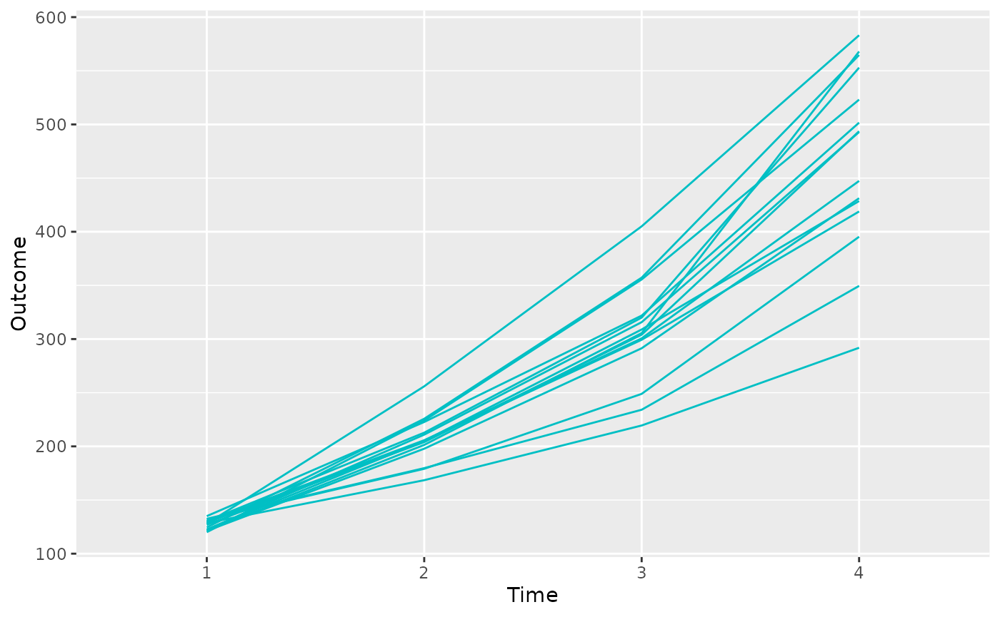
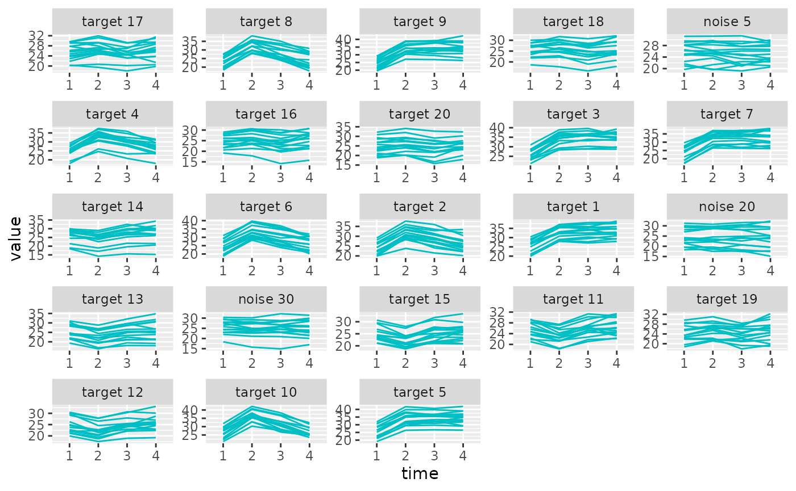
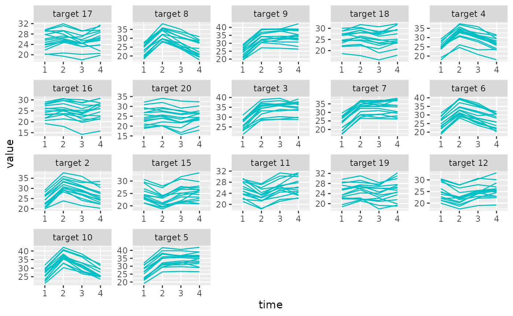

The prolong package has two primary objectives:
Facilitate the penalized modeling of high-dimensional longitudinal omics data with a longitudinal clinical outcome to obtain a sparse set of omics variables that co-vary with the outcome over time
Provide functionality in both R and in a point-and-click GUI shiny app for plots that reveal the underlying dependence structure of the omics variables
For the first objective, the prolong() function takes an
\(n \times t\) matrix of clinical
outcomes and a \(n \times p \times t\)
array of omics or omics-like variables and fits a model with a network
penalty via laplacian matrix together with either a lasso or group lassa
penalty. Hyperparameters can either be supplied or automatically
estimated internally in prolong(). The
plot_trajectories() function takes the output from
prolong() and displays a grid of the trajectories of the
variables selected by the (group) lasso + laplacian model.
For the second objective, the prolong package will
eventually sypport several plot functions that take the same \(n \times p \times t\) array of omics or
omics-like variables and look at the pairwise correlations of the
first-differenced, or delta-scale, omics or omics-like data. The
following function is currently supported:
-
delta_heatmap()- Interactive subsettable heatmaps
The prolong package comes with example data that is
simulated to imitate the motivating data for the prolong
methodology. There are two components that can be accessed with the
load() function:
sim_metabsSimulated variables in a \(15 \times 100 \times 4\) arraysim_outcomeSimulated outcome in a \(15 \times 4\) matrix
Example Data
The prolong package comes with example
metabolite-inspired variables and viral load-inspired outcome simulated
to imitate the real data that motivated prolong.
Example Outcome
The example outcome data can be accessed with:
data("sim_outcome")This simulated clinical outcome data is a \(15 \times 4\) matrix, representing measurements of a continuous outcome for 15 subjects over 4 time points.

Example Variables
The example variable array can be accessed with:
data("sim_metabs")This simulated datasetis a \(15 \times 100
\times 4\) matrix, representing measurements of 100 continuous
variables for 15 subjects over 4 time points. This is the shape that
prolong package functions expect the independent variabels
to take.
The variables are labeled as target 1-20 and noise 1-80, with the
targets correlated to each other and used to generate the outcome and
the noise uncorrelated. The plot_trajectories() function
can be used here to plot a sample of the variables’ trajectories.
plot_trajectories(sim_metabs, selected = 1:20)
prolong() Function
Now that we have loaded our x array and y matrix, we can fit a lasso
+ laplacian and a group lasso + laplacian model. To fit the (non-group)
lasso + laplacian model, we can specify groups = FALSE. If
we don’t specify any of the model hyperparameters they will be
automatically found.
promod_ll <- prolong(sim_metabs, sim_outcome, groups = FALSE)
#> No groups supplied or suggested, ordinary lasso will be used instead of group lasso
#> lambda2 and/or lambdar missing, optimizing over both
#> lambda2 = 0.685630615947191
#> lambdar = -0.0986667545799216Now that we have the results, we can quickly and easily visualize the
selected variables with plot_trajectories().
plot_trajectories(sim_metabs, promod_ll)
Let’s repeat the process but with the group lasso + laplacian model. The default is to automatically create 1 group for each of the \(p\) variables, with the different time point observations as replications within that group.
promod_gll <- prolong(sim_metabs, sim_outcome)
#> lambda2 and/or lambdar missing, optimizing over both
#> lambda2 = 0.685630615947191
#> lambdar = -0.0986667545799216
plot_trajectories(sim_metabs, promod_gll)
Correlation Plots
delta_heatmap() Function
The delta_heatmap() function takes the \(n\times p \times t\) array of variables and
produces a heatmap of the delta-scale absolute correlations to visualize
By default, delta_heatmap() will open a window to display
an interactive Shiny app with the option to view a selected subsection
of the heatmap.
delta_heatmap(sim_metabs)If interactive = FALSE, then a static heatmap will
instead be produced. We can also change the time points whose difference
we take before computing the absolute correlation matrix.
delta_heatmap(sim_metabs, timediff = "3-2", interactive = F)The delta_heatmap() function can also take in a prolong
object, numeric list of columns, or column names to only show the
heatmap for a selected subset of variables. These can be passed to
arguments object = and selected = like with
plot_trajectories
delta_heatmap(sim_metabs, timediff = '2-1', object = promod_gll)
#> PhantomJS not found. You can install it with webshot::install_phantomjs(). If it is installed, please make sure the phantomjs executable can be found via the PATH variable.
delta_heatmap(sim_metabs, timediff = '3-2', selected = promod_gll$selected)